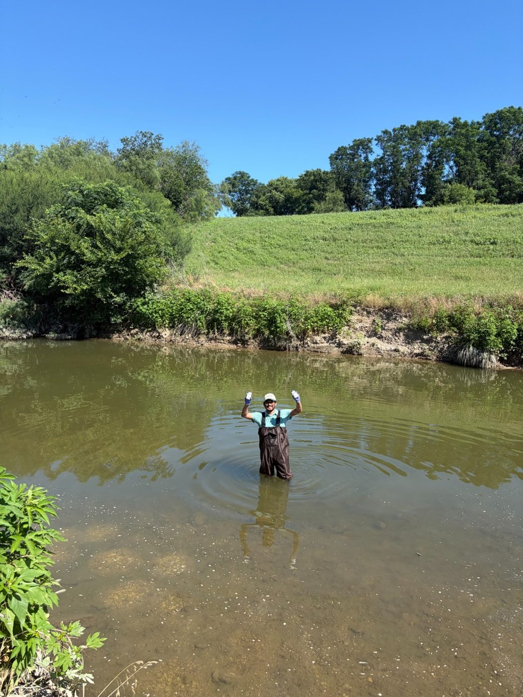
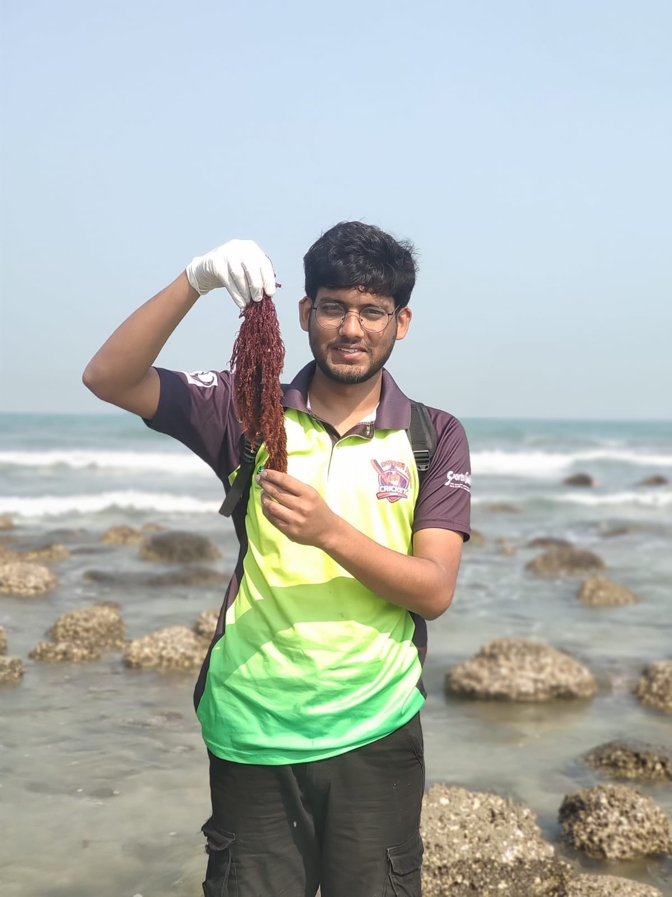
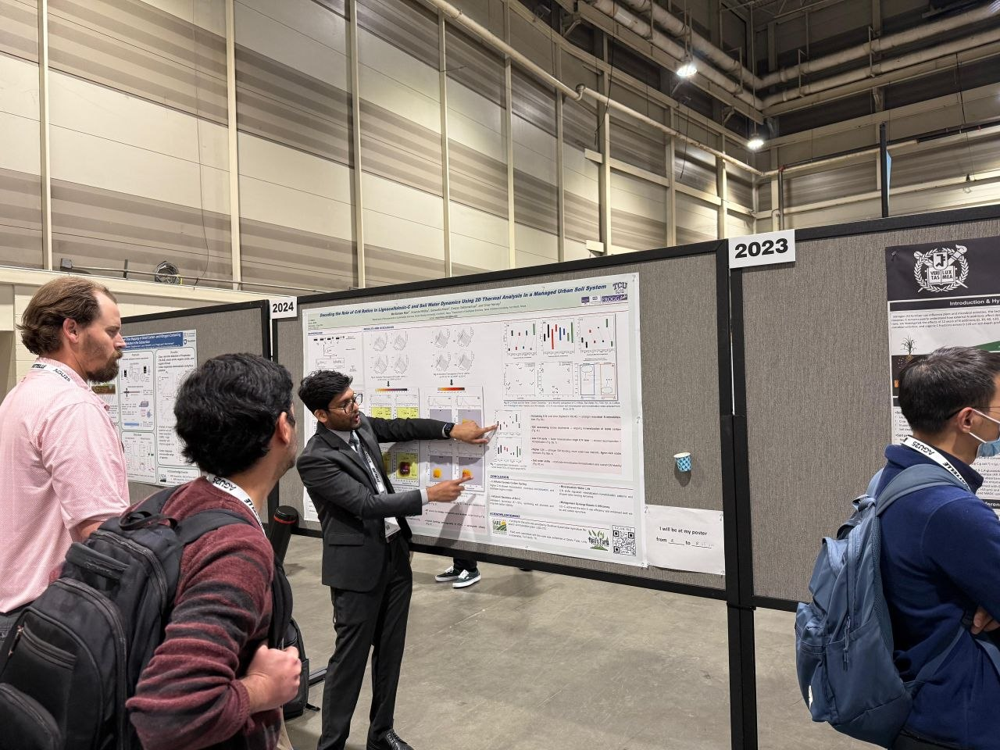
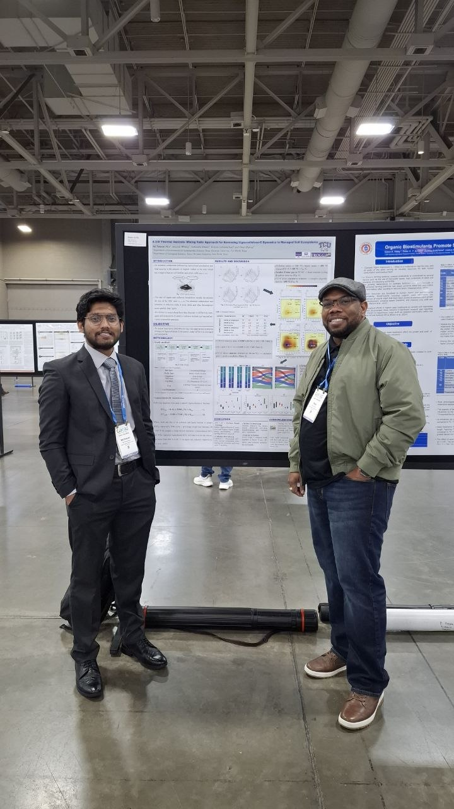
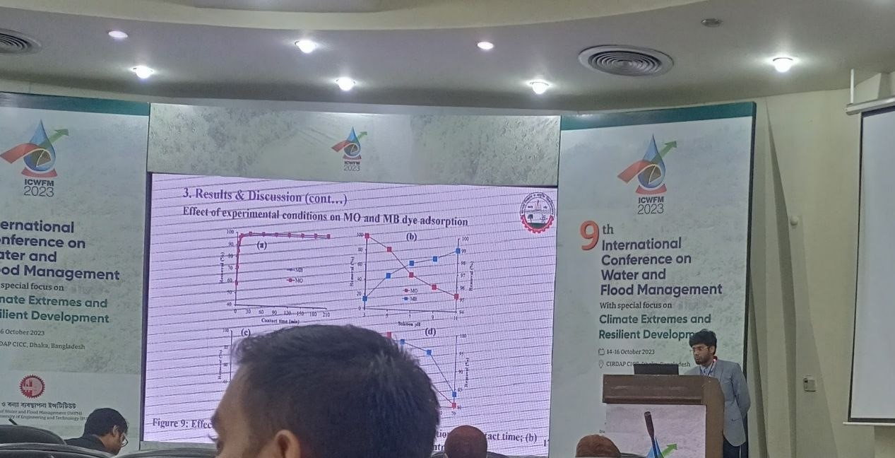
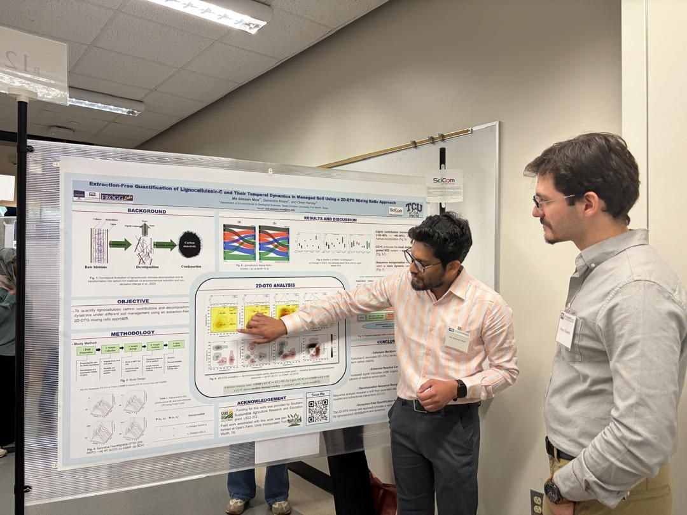
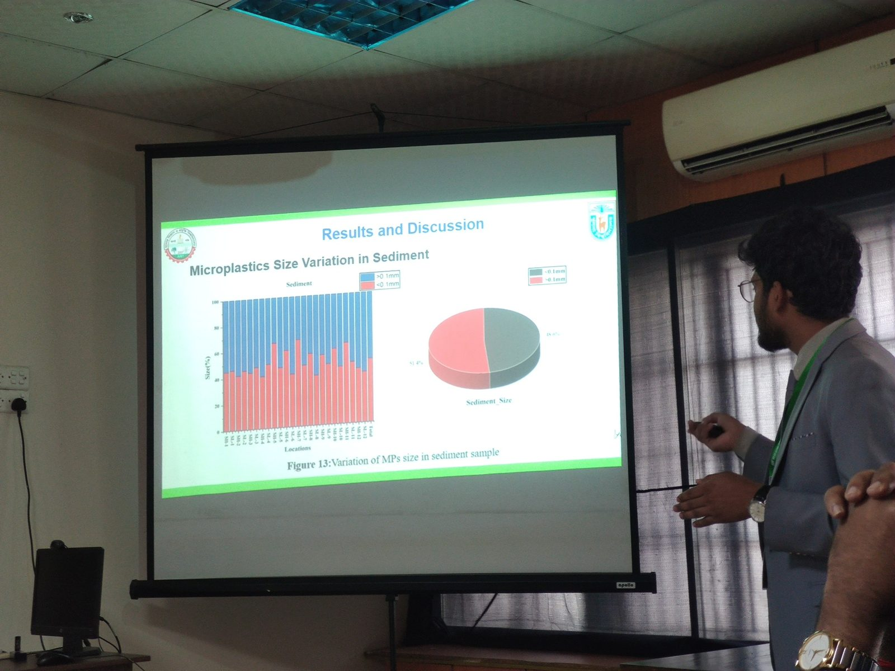
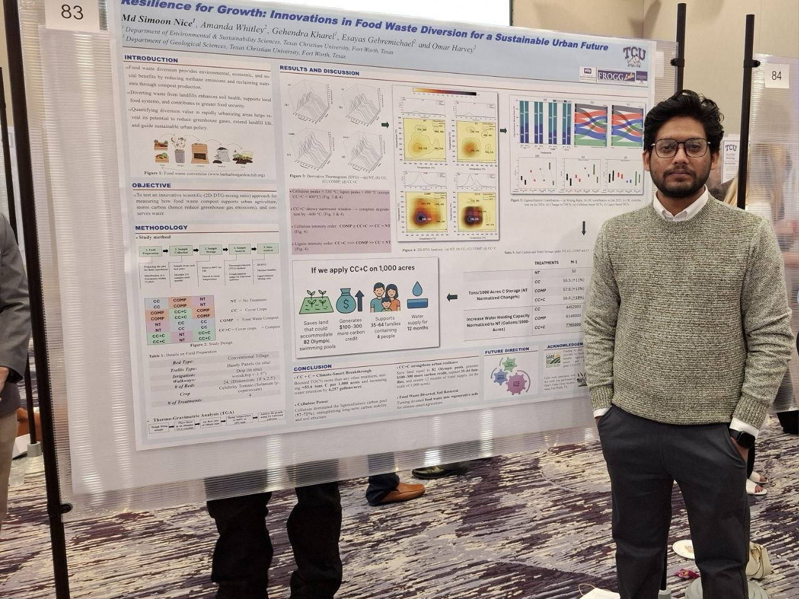

Ph.D. student in Environmental Engineering, New Jersey Institute of Technology
Md Simoon Nice
I study how PFAS, microplastics and other emerging contaminants move through water and soil, and how we can treat them.
My research connects field sampling and laboratory characterization with environmental data analysis, from surface waters in Texas to coral reefs and farm soils in Bangladesh, and now PFAS adsorption and biosolid treatment in the Emerging Contaminants Research Lab at NJIT.
Emerging Contaminants Research Lab (ECRL), NJIT
Research interests
A cross-section of where my work sits, from the water surface down into the soil. Each layer is a medium I sample, measure and model.
Surface water
Water and wastewater quality
Contaminant behavior, monitoring, treatment approaches and water-quality assessment across natural and engineered systems, including storm-driven bacterial extremes and green infrastructure.
Water column & interfaces
PFAS and emerging contaminants
Fate, transport and treatment of PFAS and other emerging contaminants: modified adsorbents for long- and short-chain PFAS, biosolid treatment to limit PFAS release to farmland, and reproducible handling of left-censored monitoring data.
Sediments & coasts
Microplastics and pollution
Occurrence, characterization, source apportionment, and ecological and human-health risk of microplastics, along with their interactions with heavy metals and other contaminants.
Soils
Soil carbon dynamics
Soil organic matter composition, lignocellulosic carbon, and management practices such as cover crops and compost that support resilient urban agricultural soils.
About
I'm interested in how contaminants move through environmental systems, how they interact with natural materials, and how science can turn that understanding into practical, sustainable solutions.
At Jashore University of Science and Technology I spent four years on microplastics, toxic elements and low-cost water treatment, work behind most of the articles listed below. At Texas Christian University I worked on a USDA-funded project on soil carbon in urban farms and on PFAS in the Trinity River.
I'm now pursuing a Ph.D. in Environmental Engineering at the New Jersey Institute of Technology, where my work focuses on PFAS and emerging contaminants.


Research experience
Projects across emerging contaminants, water quality, soil carbon and environmental pollution, newest first.
-
New Jersey Institute of TechnologyEmerging Contaminants Research Lab (ECRL)Graduate researcher, Aug 2026–present
PFAS removal from water and biosolids
Developing and evaluating modified adsorbent materials to improve PFAS removal from water, and investigating how long- and short-chain PFAS adsorb under different conditions to understand removal mechanisms. Also researching biosolid treatment processes that reduce PFAS release through biosolid management and agricultural land application, with laboratory-scale experiments aimed at practical use in water and wastewater treatment facilities.
-
Texas Christian UniversityUSDA NIFA-funded project, 2024–2026
Sustainable soil resource management on urban farms
Research assistant on Sustainable Soil Resource Management and Produce Marketing on Resource-limited Urban Farms. Assessed soil carbon dynamics in managed urban farm soils under cover-crop and compost treatments, using TGA, GC-MS, Raman spectroscopy and a 2D-DTG mixing-ratio approach to characterize lignocellulosic carbon and its links to carbon storage and soil-water retention. Mentored a high school student who presented summer research at a conference.
-
Texas Christian UniversityGraduate research, 2024–2026
PFAS in the Trinity River
Investigated PFAS occurrence in Trinity River surface waters through environmental sampling and analytical-data interpretation, including reproducible treatment of left-censored measurements below detection limits.
-
Jashore University of Science and TechnologyGraduate research, Feb 2023–Jun 2024
Microplastics across environmental matrices
Explored microplastic pollution in water, sediment, soil, dust and food using SEM, FTIR and chemical digestion protocols, and led the research of six undergraduate thesis students. Research assistant on two JUST Research Cell projects: microplastics in urban outdoor and indoor environments, and a first study of microplastics in surface water, sediment and soil in Bangladesh. Led studies on microplastics in agricultural soil in Jashore, in protected ponds and harvested rainwater, and in aquaculture ponds.
-
Asia Arsenic NetworkResearch assistant, Feb 2022–Jun 2024
Toxic elements and environmental pollution
Laboratory research on arsenic, heavy metals and other potentially toxic elements in soil, water and food, contributing to studies on their sources and ecological and human-health risks, and to adsorption research on removing heavy metals and dyes from wastewater.
-
Jashore University of Science and TechnologyUndergraduate research, Jun 2020–Dec 2022
Water treatment and soil amendments
Assessed biochar and bio-nano composites as soil amendments and developed water and wastewater treatment methods, using FTIR, ICP-OES and AAS. Research assistant on two Ministry of Science and Technology projects: groundwater health risk in southwest Bangladesh using GIS, water quality indices and multivariate statistics (2021–2022), and methylene blue removal with jute stick charcoal (2019–2020). Contributed to studies on bio-nano composites for sustainable nutrient release and on poultry litter biochar as a soil amendment.
Publications
All 21 peer-reviewed journal articles, newest first. Citation counts are on Google Scholar and ORCID.
2026
Cleaner Water
Watershed-scale green infrastructure reduces storm-driven Escherichia coli extremes: Tail-aware modeling and dependence-robust inference for bacterial water-quality management
PLOS Water
Handling left-censored PFAS data in surface-water reconnaissance: A reproducible workflow applied to ten sites in the Trinity River headwaters, Texas
Hydrology
Seasonal inflow shifts and increasing hot–dry stress for Eagle Mountain Lake Reservoir, Texas: SWAT modeling with downscaled CMIP6 daily climate and observed operations
Ecotoxicology and Environmental Safety
Tracing microplastic footprints in Bangladesh’s largest baors (oxbow lakes): First insights into characterization, ecological risks, and implications for aquatic health
Environmental Pollution
Source tracking, pollution load, and risk assessment of microplastics pollution in agricultural soils of Bangladesh using machine learning and multi-matrix approaches
2025
Physics and Chemistry of the Earth First author
Physicochemical characterization, ecological risk assessment and spatial distribution of microplastics in Bangladesh's largest coral reef systems
Food Bioscience
Microplastic contaminants in eggs: Identification, characterization, and potential risks
Environmental Pollution
Unveiling the hidden pollutants in the indoor environment: Focus on microplastic pollution and its related risks in the educational institutions of megacity, Bangladesh
Journal of Hazardous Materials Advances
Tracing the journey of microplastics in the Northern Bay of Bengal marine ecosystems, Bangladesh: A comprehensive study on source appointments, distribution, and potential risks
PLOS ONE Corresponding author
Evaluating the impacts of microplastics on agricultural soil physical, chemical properties, and toxic metal availability: An emerging concern for sustainable agriculture
2024
Journal of Hazardous Materials
Application of machine learning and multivariate approaches for assessing microplastic pollution and its associated risks in the urban outdoor environment of Bangladesh
Journal of Hazardous Materials
Microplastics in the commercially available branded milk in Bangladesh: An emerging threat for human health
Environmental Pollution
Appraisal of microplastic pollution and its related risks for urban indoor environment in Bangladesh using machine learning and diverse risk evolution indices
Emerging Contaminants
Microplastics and heavy metals in freshwater fish species in the southwestern region of Bangladesh: An emerging concern for public health
AQUA – Water Infrastructure, Ecosystems and Society
Application of machine learning and statistical approaches for optimization of heavy metals (Cd2+, Pb2+, Cu2+, and Zn2+) adsorption onto carbonized char prepared from PET plastic bottle waste
2023
Ecological Indicators
Application of machine learning and multivariate approaches for source apportionment and risks of hazardous elements in the cropland soils near industrial areas in Bangladesh
PLOS ONE
Black carbon derived PET plastic bottle waste and rice straw for sorption of Acid Red 27 dye: Machine learning approaches, kinetics, isotherm and thermodynamic studies
Heliyon
Removal of hazardous textile dye from simulated wastewater by municipal organic solid waste charcoal using machine learning approaches: Kinetics, isotherm, and thermodynamics
Toxicology Reports
Receptor model-based sources and risks appraisal of potentially toxic elements in the urban soils of Bangladesh
AQUA – Water Infrastructure, Ecosystems and Society
Adsorption of acid and basic dye from the simulated wastewater using carbonized microplastic particles synthesized from recycled polyethylene terephthalate plastic waste bottles: An integrated approach for experimental and practical applications
No papers on this topic yet.
- ORCID
- 0009-0001-4434-8506
- Scopus Author ID
- 57964748300
- Web of Science ResearcherID
- OYF-3400-2025
Conference presentations
Sharing work on microplastics, soil carbon, environmental contaminants and sustainable resource management.






All presentations
2025
- Decoding the role of C:N ratios in lignocellulosic-C and soil water dynamics using 2D thermal analysis in a managed urban soil systemAGU 2025 Fall Meeting
- A 2-D thermal analysis–mixing ratio approach for assessing lignocellulose-C dynamics in managed soil ecosystemsCANVAS 2025, Soil Science Society of America
- Resilience for growth: Innovations in food waste diversion for a sustainable urban futureTCU Research and Creative Activities Symposium
- Evaluating ecosystem services of sustainable urban farming for food desert revitalizationSouthern Family Farmer and Food System Conference, Texas State University
- Assessing soil carbon dynamics in amended urban farms in Fort Worth using thermal analysis22nd Michael and Sally McCracken Annual Student Research Symposium, TCU
- Mentored studentEffects of food waste compost on soil and fruit quality: Conventional vs double-dig farmingSouthern Family Farmer and Food System Conference, Texas State UniversityStudent: J. Cooks
2024
- OralPrevalence, distribution, and characterization of microplastics in water and sediment of Saint Martin’s Island, Bangladesh: An emerging concern for marine environment2nd International Conference on Environment, Khulna University
- Preparation, characterization and performance evaluation of bio-nano composite for sustainable nutrient release: Toward sustainable agricultural practices2nd International Conference on Environment, Khulna UniversityLead author: B. N. Netema
- Analysis of microplastics contamination, abundance and characterization in surface water and sediment along the Kuakata sea beach, Bangladesh2nd International Conference on Environment, Khulna UniversityLead author: K. R. Islam
- Performance evaluation of poultry litter and poultry litter biochar as a soil amendment for agricultural soil properties and toxic metal availability2nd International Conference on Environment, Khulna UniversityLead author: K. R. Islam
- Identification, characterization and potential risks of microplastics in the urban street dust of Bangladesh2nd International Conference on Environment, Khulna UniversityLead author: M. S. Rahman
2023
- OralAdsorption of textile dye from simulated wastewater using PET plastic waste activated carbon: An integrated approach for experimental and practical application9th International Conference on Water and Flood Management, BUET
- Microplastics as an emerging pollutant in farmland soil: An impact evaluation on farmland soil properties and toxic metal availability7th International Conference on Civil Engineering for Sustainable Development, KUET
- Adsorption of heavy metals (Cd²⁺, Cu²⁺, Pb²⁺, Zn²⁺) onto graphene synthesized from PET plastic bottle waste: Kinetics, isotherm and thermodynamics9th International Conference on Water and Flood Management, BUETLead author: M. S. Rahman
Education and positions
Education
- Ph.D., Environmental EngineeringNew Jersey Institute of Technology, Newark, NJ
- M.S., Environmental ScienceTexas Christian University, Fort Worth, TXThesis: An innovative 2-D thermal analysis–mixing ratio approach for assessing lignocellulose-C dynamics in managed soil ecosystems
- M.S., Environmental ScienceJashore University of Science and Technology, BangladeshThesis: Microplastics and potential toxic elements in the sea beaches of Saint Martin’s Island, Bangladesh: A water–sediment–biota pollution nexus study
- B.Sc. (Honors), Environmental ScienceJashore University of Science and Technology, BangladeshThesis: Microplastics as an emerging pollutant in farmland soil: Impacts on soil properties and toxic metal availability
Positions
- Graduate Teaching AssistantDepartment of Civil and Environmental Engineering, New Jersey Institute of Technology
- Graduate Teaching and Research AssistantDepartment of Environmental and Sustainability Sciences, Texas Christian University
- Research AssistantAsia Arsenic Network, Jashore, Bangladesh
- Research AssistantDepartment of Environmental Science and Technology, Jashore University of Science and Technology
Service and awards
Awards
- SERC Grant Award, Science & Engineering Research Center, Texas Christian University
- ENSC Graduate Research Grant, Department of Environmental and Sustainability Sciences, TCU
- Graduate Student Travel Grant, Graduate Student Senate and Graduate Studies, TCU
Peer reviewer for
- Journal of Hazardous Materials
- Journal of Hazardous Materials Advances
- Journal of Hazardous Materials: Plastics
- Chemosphere
- Journal of Cleaner Production
- Environmental Challenges
- Heliyon
- PLOS ONE
Lab
Technologies for Removing Anthropogenic Contaminants & Emerging pollutants
TRACE Lab is my personal research platform, focused on water treatment for PFAS, microplastics and other emerging contaminants: designing adsorbents that capture them, and understanding how they move through soil, water and living systems. It reflects a long-term goal of building an interdisciplinary research group around contaminant removal.